inthemix Games & Film
Game, film and DVD reviews for the lifestyle section of inthemix, 2002 to 2005, among the earliest writing in this archive. 16 pieces from the deep archive.
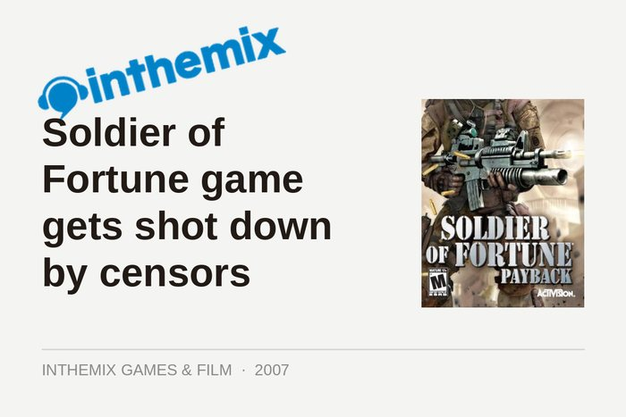
Soldier of Fortune game gets shot down by censors
24 October 2007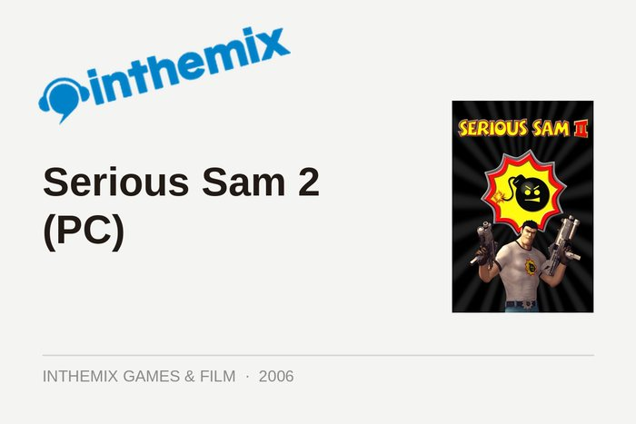
Serious Sam 2 (PC)
23 January 2006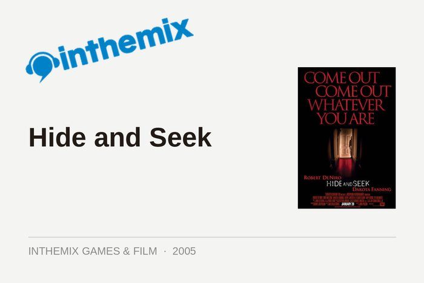
Hide and Seek
12 July 2005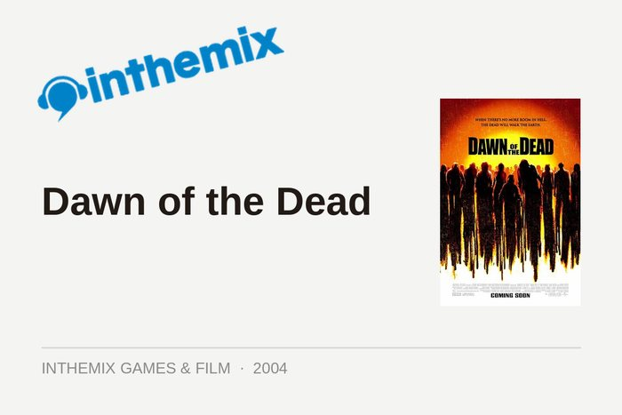
Dawn of the Dead
17 November 2004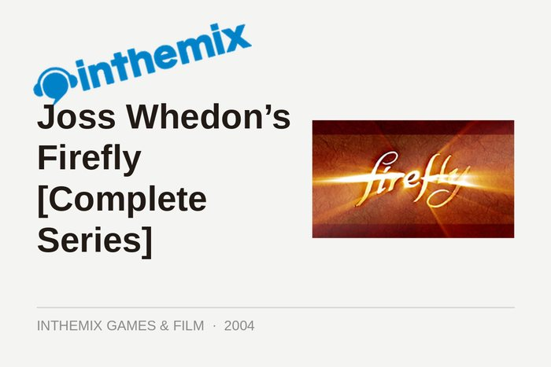
Joss Whedon’s Firefly [Complete Series]
16 August 2004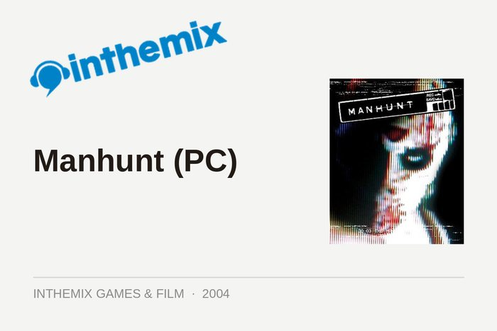
Manhunt (PC)
28 June 2004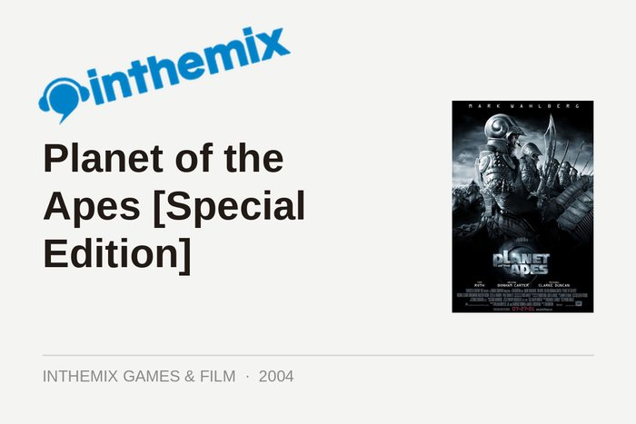
Planet of the Apes [Special Edition]
30 May 2004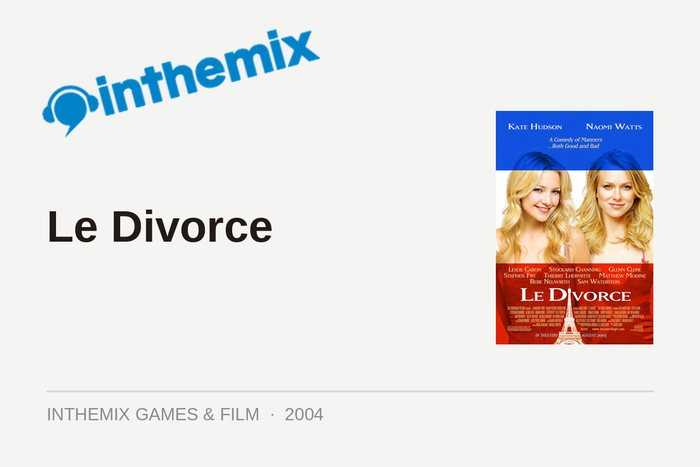
Le Divorce
10 April 2004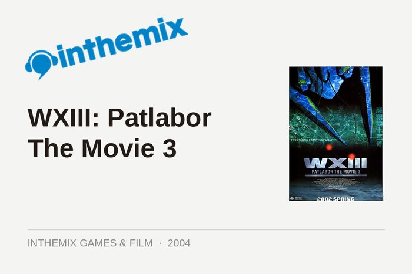
WXIII: Patlabor The Movie 3
16 February 2004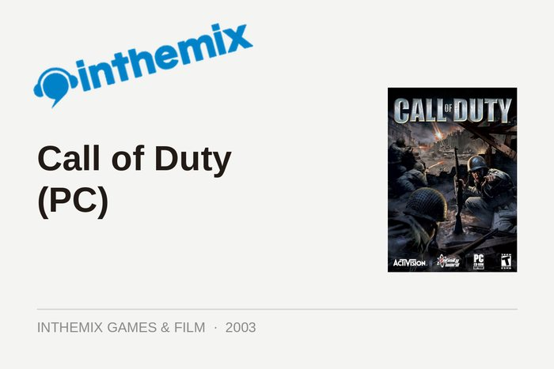
Call of Duty (PC)
19 December 2003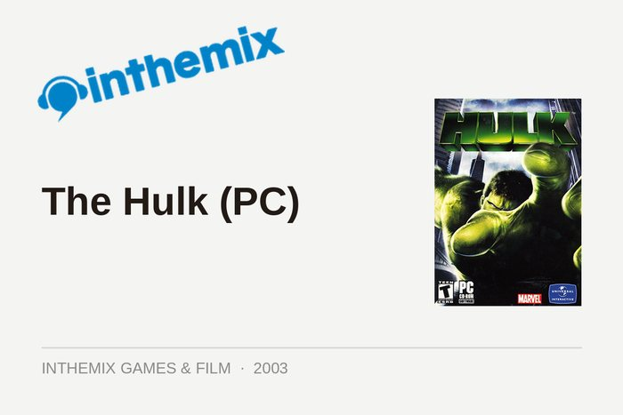
The Hulk (PC)
5 September 2003
Mafia (PC)
21 November 2002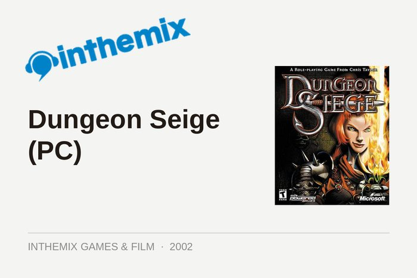
Dungeon Seige (PC)
5 September 2002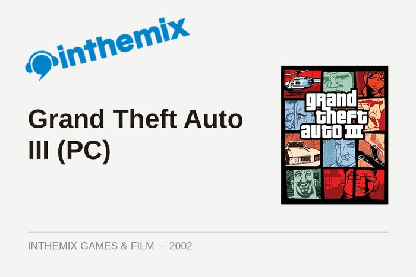
Grand Theft Auto III (PC)
7 August 2002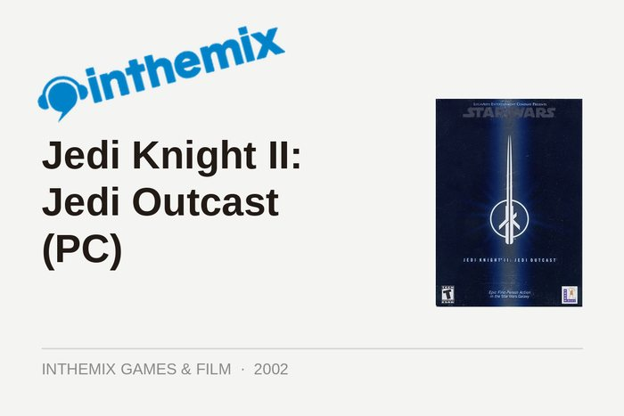
Jedi Knight II: Jedi Outcast (PC)
13 May 2002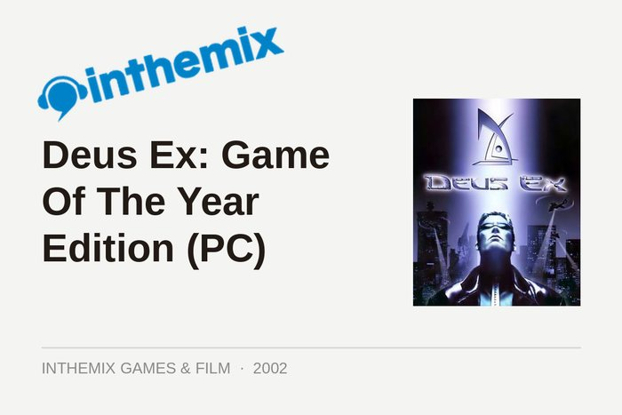
Deus Ex: Game Of The Year Edition (PC)
10 May 2002